Editor
Approved application · approved logoEvery image below is an actual canonical PNG. Open an image for its full resolution. These are authored design scenes, not current-app browser captures.
Stored playback controls
stored-native-mediaActions and implementation pointers
+ New page · Journal · Explore · All pages · ⌄ · Reflections · › · Reading · Open source file · Ask Journl · Today’s Journal · Close · Instant · Thinking
packages/better-editor/src/engine/schema.ts

SHA256 2ca4fed14926aeb7fbcd4118dc68ece41b9233ce34c887bf5efbff80dddef5ae

SHA256 1a50b64d18b3db216edd2c57fcd595d5272586a8bcd79ff60caf430a4b9353c0

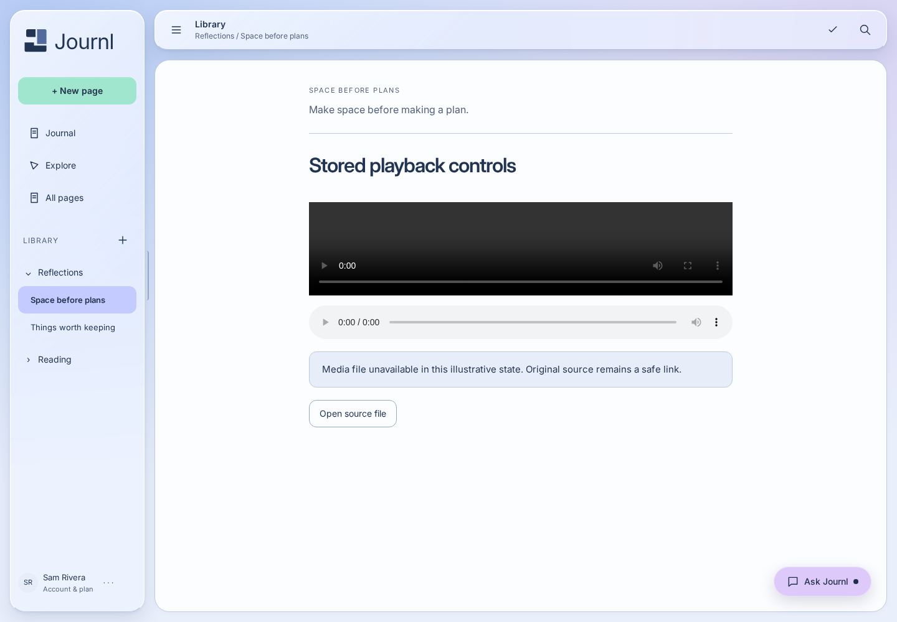
SHA256 e3abd41a2932e5dd388fc9cb997cd98a3a0d2dc40b11a1bc07be097bd3e75ff4

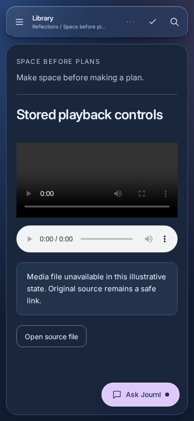
SHA256 357073c2482107c12865f318adf69affc104399d54ab333ef76fb70a24903ca9
Stored file · safe external link
stored-file-linkActions and implementation pointers
+ New page · Journal · Explore · All pages · ⌄ · Reflections · › · Reading · Field guide · Open file · Ask Journl · Today’s Journal · Close · Instant · Thinking
packages/better-editor/src/engine/schema.ts

SHA256 94032d1d4a09ae386ed4507d9155fd2ddd341bdb30b6ca6ecd0e4ed85ea5c666

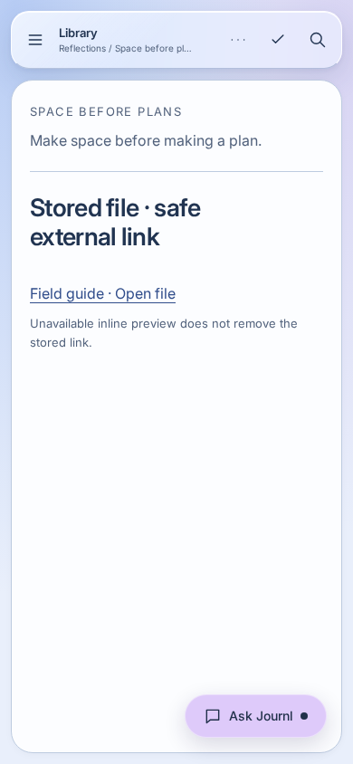
SHA256 4ce31ac518d6b33e753002b001052e719358141c690efd9a6d9215a5305c83d7

SHA256 ad48b0416c1aaa1ba29fd31430240963ec7e3eb7089e80906645d39503295e7f

SHA256 52b5f96d7667551ee4795fbe6ad035395f3cf5f86cbdb7ae80ae8f34cc8dcb51
A slower start
selection-selectionActions and implementation pointers
+ New page · Journal · Explore · All pages · ⌄ · Reflections · › · Reading · Text ⌄ · B · I · U · S · ‹› · Ask Journl · Today’s Journal · Close · Instant · Thinking
apps/web/src/components/editor/document-toolbar.tsxpackages/better-editor/src/ui/controls.tsx

SHA256 30d34c50e0992603b688141237b117c5e1ea0528b075dad2fe5213063689828c

SHA256 e45e469ad4cec2203e1f5f1d6f5cb46ba71a9c44e62ab921d2d5261cb74c9965

SHA256 1f2a0468ce62646258c8747c6069e1b34a01fd15bdbb22a6f832c96ff74428a1

SHA256 553a0bf8e090c25c55402f7caa9760db739fad69391750f0ea7c5af5d2ffb2d9
A slower start
selection-activeActions and implementation pointers
+ New page · Journal · Explore · All pages · ⌄ · Reflections · › · Reading · Text ⌄ · B · I · U · S · ‹› · Ask Journl · Today’s Journal · Close · Instant · Thinking
apps/web/src/components/editor/document-toolbar.tsxpackages/better-editor/src/ui/controls.tsx

SHA256 1f2a0468ce62646258c8747c6069e1b34a01fd15bdbb22a6f832c96ff74428a1

SHA256 553a0bf8e090c25c55402f7caa9760db739fad69391750f0ea7c5af5d2ffb2d9

SHA256 30d34c50e0992603b688141237b117c5e1ea0528b075dad2fe5213063689828c

SHA256 e45e469ad4cec2203e1f5f1d6f5cb46ba71a9c44e62ab921d2d5261cb74c9965
A slower start
selection-disabledActions and implementation pointers
+ New page · Journal · Explore · All pages · ⌄ · Reflections · › · Reading · Text ⌄ · B · I · U · S · ‹› · Ask Journl · Today’s Journal · Close · Instant · Thinking
apps/web/src/components/editor/document-toolbar.tsxpackages/better-editor/src/ui/controls.tsx

SHA256 553a0bf8e090c25c55402f7caa9760db739fad69391750f0ea7c5af5d2ffb2d9

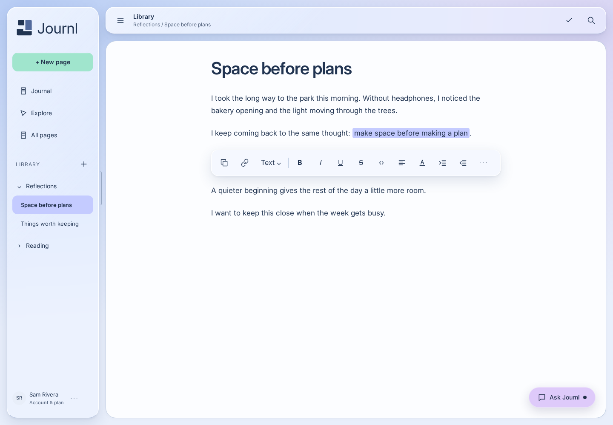
SHA256 1f2a0468ce62646258c8747c6069e1b34a01fd15bdbb22a6f832c96ff74428a1

SHA256 30d34c50e0992603b688141237b117c5e1ea0528b075dad2fe5213063689828c

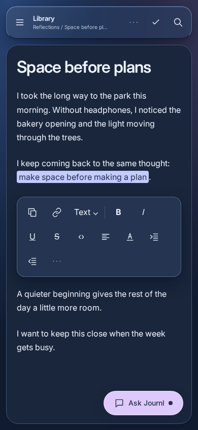
SHA256 e45e469ad4cec2203e1f5f1d6f5cb46ba71a9c44e62ab921d2d5261cb74c9965
A slower start
selection-block-typeActions and implementation pointers
× · Text — selected · Heading 1 · Heading 2 · Heading 3 · Heading 4 · Heading 5 · Heading 6 · Bullet list · Numbered list · Checklist · Toggle list · Toggle heading · Quote · Code · Divider · Table
apps/web/src/components/editor/document-toolbar.tsxpackages/better-editor/src/ui/controls.tsx

SHA256 bbc9616db63d3de567712b8622b9500ac110f8fcc6df7b743f898d875fd2df9e

SHA256 a34005066e8f4e83d08c32140c026a8f7989efe572ab17745d56117dcd458880

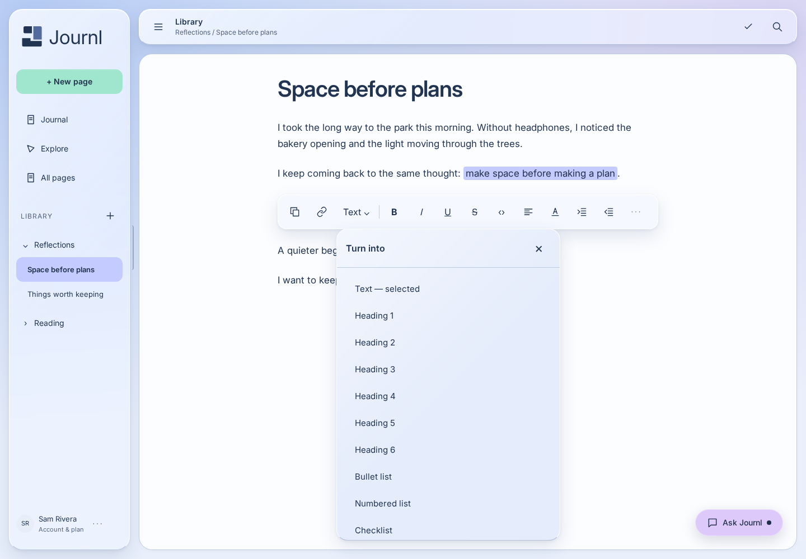
SHA256 93564dd7bac8ef3ecb43046d1a4b0604c0658947401f18e89688094bd9c40ee1

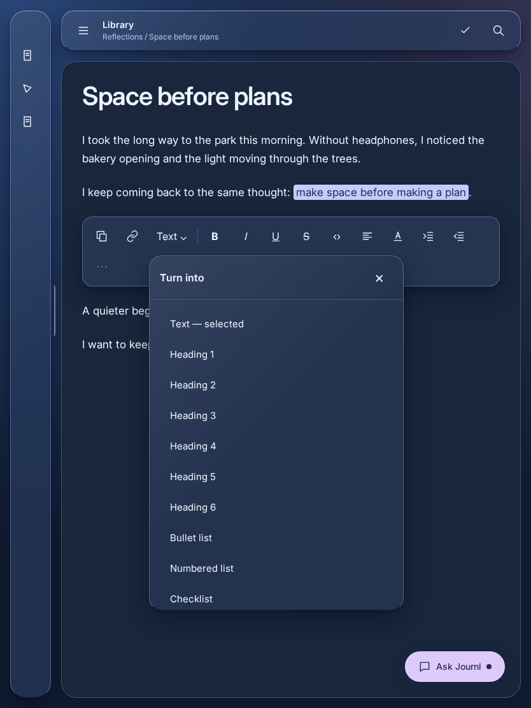
SHA256 d27346cc60d822aa3e2f535c8fca04998d066740e4e7c34fe031f6680dfc6ce8

SHA256 746969cf8d10ba914969d7e5c1672d0d476cd5af1b08ea0708ac26a6cc6c0fa2

SHA256 3eb954638ee9b979f7d5849163a6bba6c1996ad02e4051565e0733f4c4b5ac96

SHA256 5fc00ea3f9abb168df665142d6dac40cfff7b45a691a9cd3f4a15926d152efd2

SHA256 c9e112e5d95179b04a2eac3c815bf8f69356c7068fc5f535c534c2ce0e3dc42b

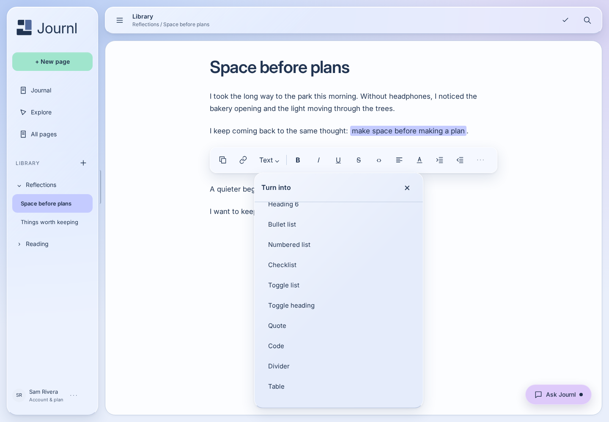
SHA256 8bd11115c417bea9b2f72407d6fdb115b403ad8583b46ca37c427943bccf2c77

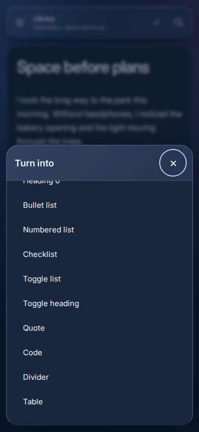
SHA256 4734b391bd28ca7ea45307f96eab152fa3f9b33259a31719cbda3ef38f83e05a

SHA256 1af6594c7ee95c3cf46b7e2393709441666094fb6f9ee2e533aa04130d531f6b

SHA256 04022edc956cfb61450953f5a3501197423514180e382d698c7a1b66625a8f71
A slower start
selection-colorsActions and implementation pointers
× · A
apps/web/src/components/editor/document-toolbar.tsxpackages/better-editor/src/ui/controls.tsx

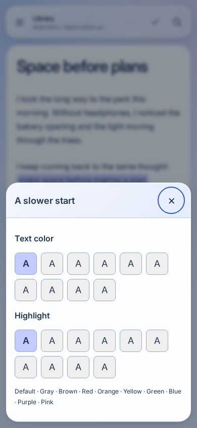
SHA256 1d70e6970a999b1f56d555e4ff9790385c9d95dbfee63cdfca3122263bdbf60e

SHA256 88e27b485dcc4e4887fbc965ecd4a598c1b753a162bd7a946e6bb831bebb342b

SHA256 7c31c8635b5449b3e1d29878da718ef9870d2fe999ac72b992153cc493914d6b

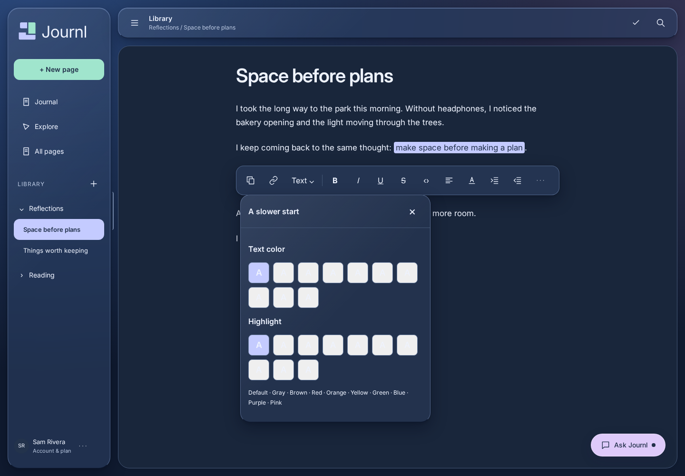
SHA256 79fe232f1099ee2df2ee77a08997c05afeead538fb9ef02227bc03203b7e5ef9
A slower start
selection-alignmentActions and implementation pointers
× · Left — selected · Center · Right · Justify
apps/web/src/components/editor/document-toolbar.tsxpackages/better-editor/src/ui/controls.tsx

SHA256 dd9595a5290852055b58552d4a66b55a8b13972a652ab3f18ad86ea9d23b960f

SHA256 95cf8aa9f880f9737da6a50258db975a9404661cb4d410ff4fcc26ab46ebb76a

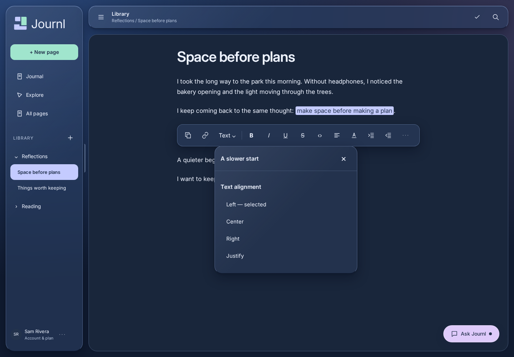
SHA256 028969b27db8ab04a2d2f9584838f41905190e79d1852c7ec0e1dfdcbc2fd397

SHA256 d94e272f2adabad8558ebf3309a78c7e6ce7d46e587ef755fe9dca47e6e74e08
A slower start
selection-insert-linkActions and implementation pointers
× · Apply link · Insert mention · Remove link
apps/web/src/components/editor/document-toolbar.tsxpackages/better-editor/src/ui/controls.tsx

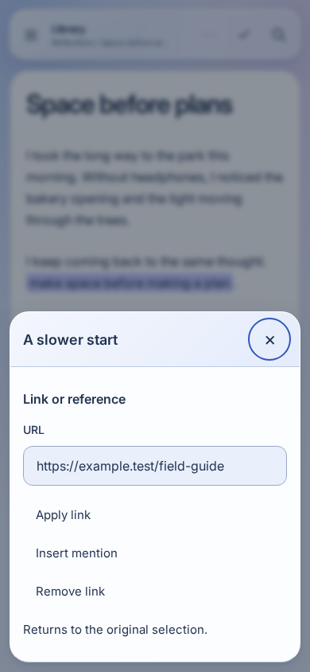
SHA256 5ff7f9cb69784d8a1d282899eea212a2bface28fd89b327544b3d8f615162e8b

SHA256 f3229f03fa937cb6af2954291dc9b778a0c4cb5da8fc5e10a8665c64a4cf4e34

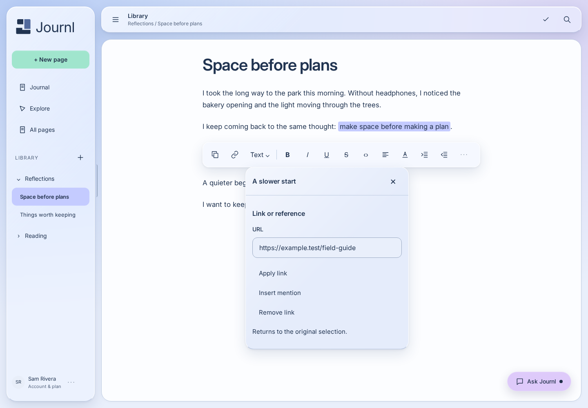
SHA256 9e50eb366b7d70b1e514000a5c99621fbf876843ce670338d0d379fb1a75332f

SHA256 2c81efe1fcd53439550e6aeac60da61c682b4e69feec29de30bc1ddf5519a756
A slower start
selection-more-actionsActions and implementation pointers
× · Copy block link · Display as · Indent · Outdent · Duplicate block · Move block up · Move block down · Delete block · Undo · Redo
apps/web/src/components/editor/document-toolbar.tsxpackages/better-editor/src/ui/controls.tsx

SHA256 371a66ded985b8b86fc1ee7e4eaf2066f370c61978f69c9c0079763280ef95b3

SHA256 26196b36b5008e46e6748bc4087ddc83449e602e0980029a1df62e92fba912ac

SHA256 e1b966a76167473b39b3a0112c9eda9b7d3523decafe2436ff8684b65d7ca033

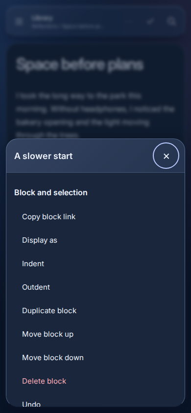
SHA256 c18a4ba97ee55b9991006ad4d49b2d6feff29b8c68d40c7ad66f78381d81b564

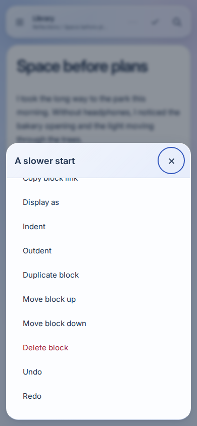
SHA256 93fcfcdaba66048caf36fc0addb1117c5e2ca145b005eddf91e36415be27cb82

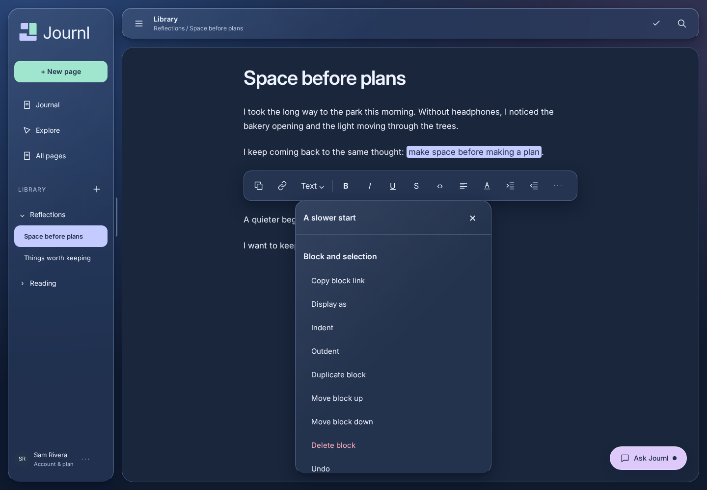
SHA256 a9fb6569b813f8c0b21c92a41493155392846845edd5b4ff0543226e9d19ae16

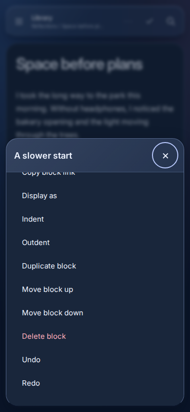
SHA256 457306b2a37e35093742cb792c64bca9e869c0bf3a6ccd53c14304beae270dce

SHA256 e92e06af8acec5cfdc3a236036c0558e62637d5a56b2f9668692190aec55d777